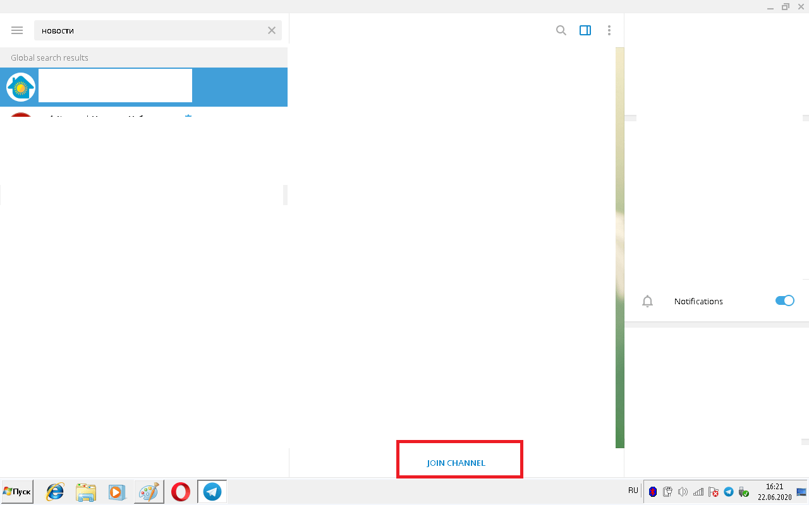
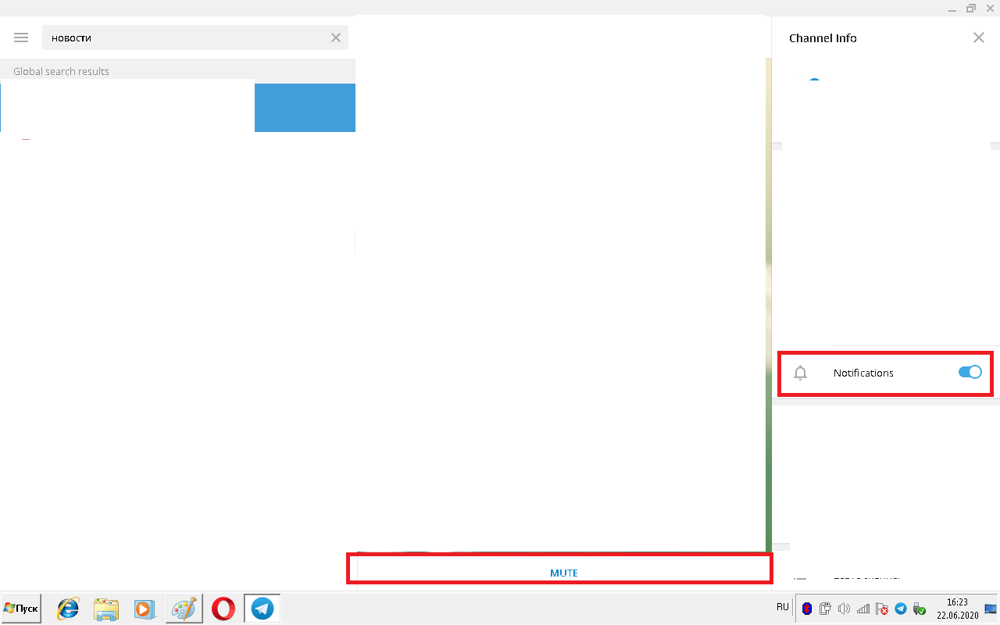

Как подписаться на канал в Telegram
Группы в соцсетях и каналы в Телеграм – близки по смыслу. В них регулярно выкладываются посты со статьями, картинками, видео и другими файлами. Подпишитесь на канал, для того, чтобы не пропускать новые посты.
| Как подписаться на публичный канал ↓ | Как подписаться на закрытый канал ↓ | |
Подписка на публичный канал в Telegram
Публичные каналы – это группы в Телеграм, в которые вступать может человек желающий не пропускать новости или сообщения канала. Поиск совершается через встроенный поисковик, или через пересланные сообщения, зайдя на канал через ссылку. В Телеграм 90% каналов – публичные, так что проблем при подписке на канал не будет. Чтобы подписаться на публичный канал в Telegram, совершите следующие действия:
1. Найдите или перейдите на окно нужного канала;
2. Найдите и нажмите на кнопку «Присоединиться» в низу окна;
3. Теперь будут приходить уведомления о новых постах в этом канале, сам канал будет среди чатов списка.
{kind=link}
Подписка на закрытый канал в Telegram
По предварительной оценке 10% каналов закрытые или приватные. Это такие каналы в Телеграм, в которые вступление происходит только по личному приглашению. Чаще в них публикуется приватный или взрослый контент, который не стоит видеть не знающим об этом или хотя бы детям. По этой причине (и некоторым другим) осложнен поиск закрытых каналов в Телеграм, да и зайти в группу через пересланное сообщение не получится, мессенджер выдаст ошибку.
Чтобы подписаться на закрытый канал, нужна специальная ссылка или знакомые люди, которые уже состоят в таком канале. По ссылке возможно перейти на канал, посмотреть посты и подписаться. Человек, уже состоящий в группе, сможет в нее пригласить в таком случае присоединиться к закрытому каналу получится без проблем.
Отключение уведомлений:
Если захотелось видеть группу и только иногда просматривать посты в окне чатов, при этом постоянные уведомления не нужны, отключается это следующими действиями.
В приложение на ПК
- Зайдите в окно с нужным каналом;
- Найдите кнопку отключения уведомлений снизу, или откройте дополнительное меню канала и отключите уведомления уже там;
- Теперь не будут приходить уведомлений о новых постах, мало вероятно теперь спутать с новыми сообщениями.
{kind=link}
{kind=link}
{kind=link}
{kind=link}
Спасибо, очень полезная информация.
пасиба я пошел